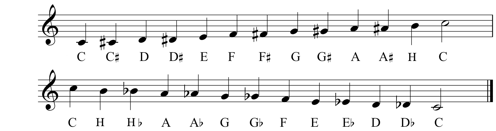

Tonene vi har vist frem til nå er ikke de eneste man har.

Her ser du resten av dem. Du kan se de samme tonene som tidligere i temaet, fra C til C stigende og synkende. Nå har mange av disse notene fått noen ekstra tegn ved seg.
Tonene på den øverste linjen har fått et kryss , og tonene på den nederste har fått en b. Samlet kaller man disse tegnene fortegn. Man kan kalle disse nye tonene for eksempel Ciss (C#), Diss (D#) osv, og Dess (Db), Ess (Eb) osv. Man kan også bare si kryss for C, b for E.
Disse tegnene endrer tonene. Kryssene gjør tonene høyere, og b-ene gjør tonene lavere. Begge tegnene endrer tonene med en halvtone, som er enda et intervall.
Det som er viktig å påpeke her er at selv om noen toner har forskjellige navn så låter de likt. For eksempel så låter tonene Ab og G# likt.
Tonen G ligger rett under tonen A i notebildet. Om man da setter et kryss på tonen G blir den høyere, og setter man en b på tonen A blir den lavere. Da har man fått tonene G# og Ab. Da har disse tonene møtt hverandre på midten, på en måte.
Som mye annet her er det kanskje vanskelig å forstå i tekstform. Vi har derfor laget et piano som du kan spille i nettleseren, så du kan prøve deg frem. Alle tangentene (knappene) på pianoet er markert med tonenenavn.
Se på rekkefølgen tonene ligger i, og hvor kryssene og b-ene (de svarte tangentene) ligger i forhold til tonene uten ekstra tegn (de hvite tangentene).